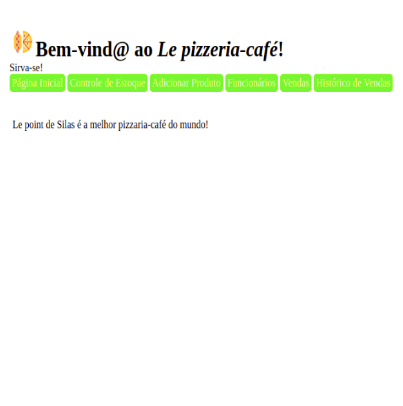

Meus Projetos

Le pizzeria-café
Este é um dos primeiros projetos
desenvolvidos na Labenu.
Trata-se de uma página html e css.
Simulação de uma página de uma loja virtual (Ecommerce).
- TECNOLOGIAS USADAS NO PROJETO
- Html5
- Css3
Habilidades (técnicas e comportamentais)
Proatividade: Consigo resolver problemas buscando em todas fontes de informação.
Organização: Com essa habilidade consigo analisar e extrair um resultado limpo das fontes
Resiliência: Gosto de tirar proveito de eventuais fracassos apropriando-me das lições/experiencias
Comunicação: Sempre que possível, utilizo-me da linguagem simples e de fácil entendimento para com eventuais dependentes